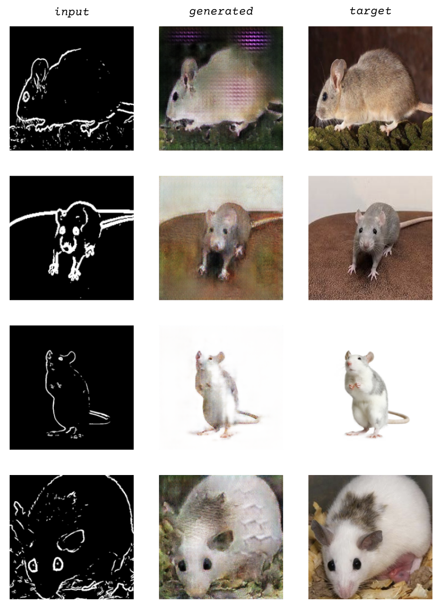

Sarah Dang
Beholder of Igoe is based on the book Physical Computing which contains a diagram of a creature representing "what a computer sees" based on a typical computer's input. The software was meant as a demo to test a larger class structure based on a dungeon crawling adventure, encountering similar monsters derived from historical and contemporary writing about computers and interaction design.
